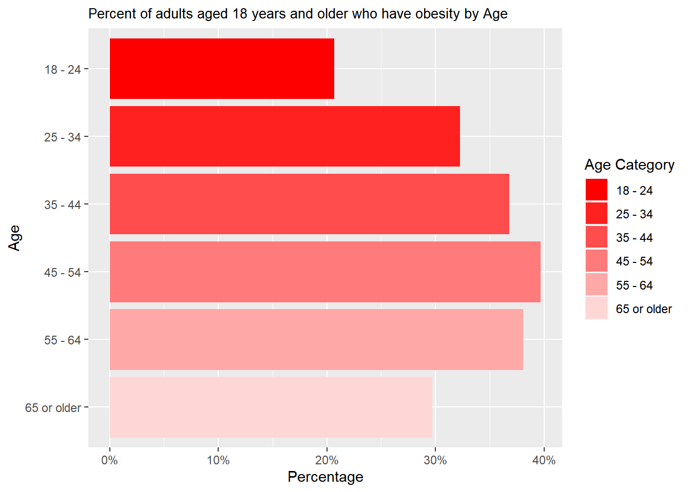
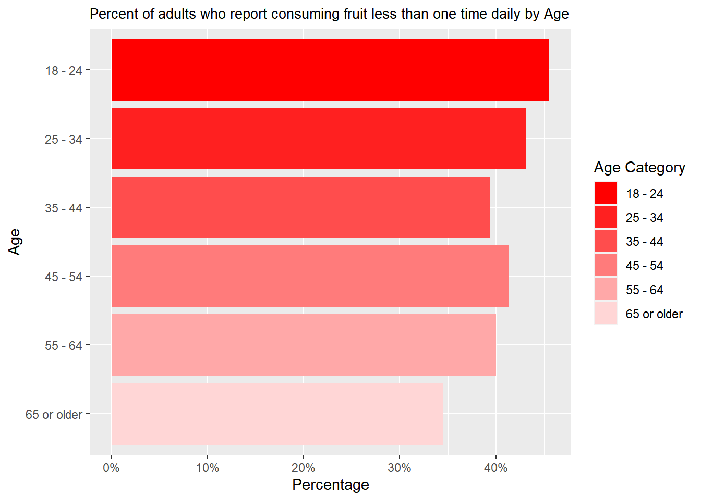
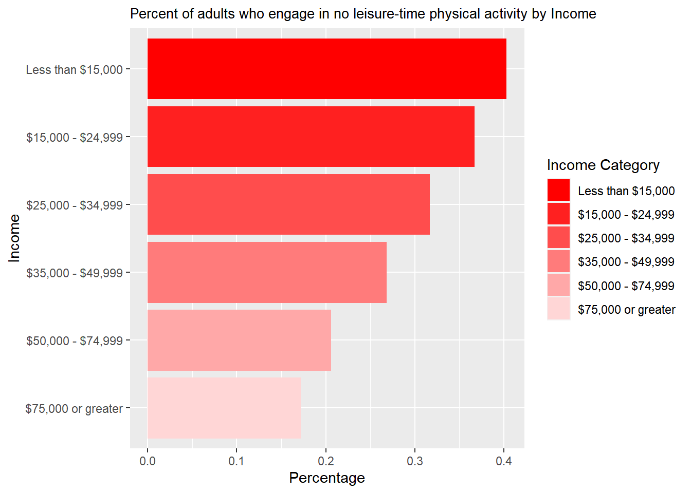
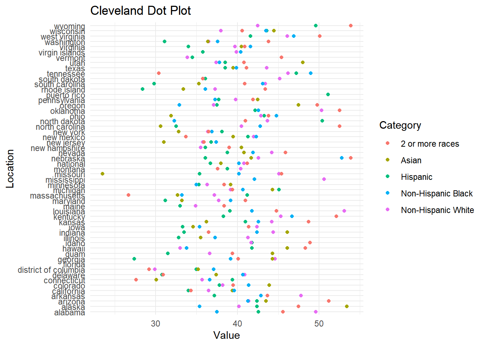
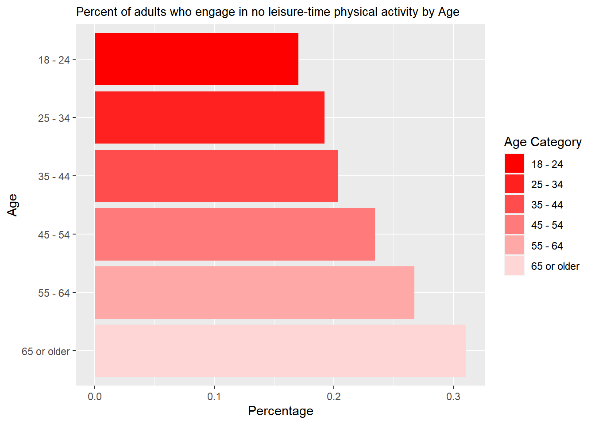
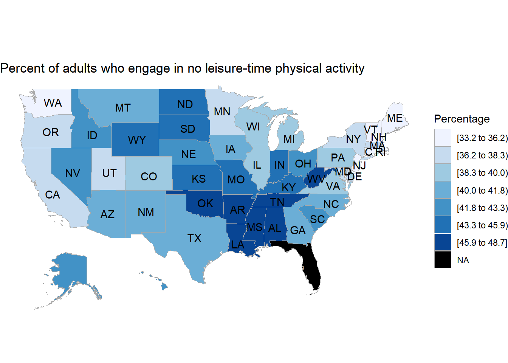
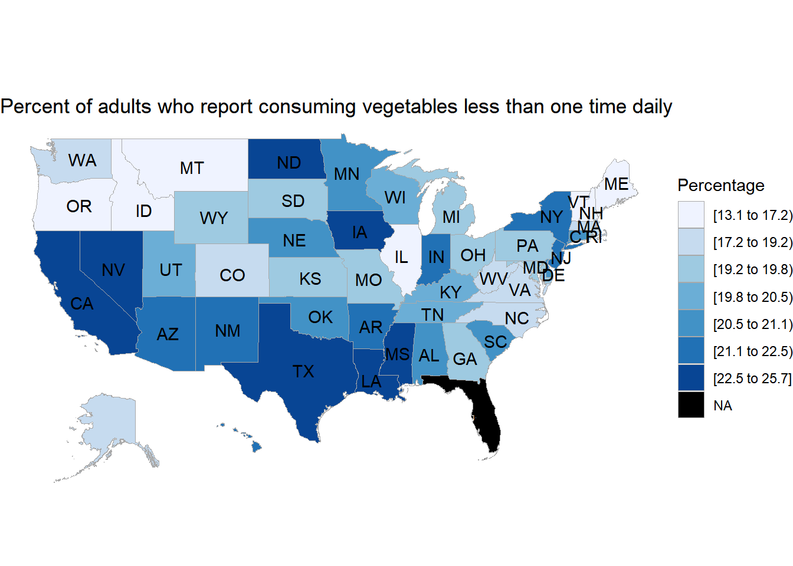

3 Results
3.1 Demographic and social factors influence Nutrition, Physical Activity, and Obesity patterns
From the Questions of Interest list, We will first analyze the first question: how do demographic and social factors influence Nutrition, Physical Activity, and Obesity patterns?
We will consider Age as a demographic factor and Education and income as social factors. Now, let’s discover what pattern we can see!
First, we will focus on Obesity Class:
The bar graph shows that the people earning the most have the lowest percentage of obesity. On the other hand, the people who make the least amount of money have the highest percentage of obesity.

The bar graph shows that the most educated people have a minimum percentage of obesity rate. However, people with the lowest education qualification have a maximum percentage of obesity rate.

The age group 18 to 24 has the lowest obesity percentage. Then there is an increasing trend from the 18 to 24 age group to the age group of 45- 54. Then, after this age range, the percentage of obesity starts decreasing.
So, the influence of demographic (Age) and social factors (Education, Income) towards Obesity: From the above 3 bar plots, we can see that people with the highest amount of income, highest educational qualification, and the youngest group of people (18 to 24) are least obese.
Now we are going to deep dive into Nutrition Class:
The most minor percentage of adults consuming fruit less than one time daily are the people who earn the most. On the other hand, the highest percentage of people consuming fruit less than one time daily are the ones who make less than $15,000.
The bar graph shows that the most educated people, having the lowest percentage, reported consuming fruit less than once daily. However, people who were high school graduates had the highest percentage who reported consuming fruit less than once daily.

The oldest group, having the lowest percentage, reported consuming fruit less than once daily. Meanwhile, people between 18 and 24 have the highest percentage of reported consuming fruit less than one time daily.
So, the influence of demographic (Age) and social factors (Education, Income) on Nutrition (Fruit): From the above 3 bar plots, we can see that people with the highest amount of income, highest educational qualification, and age between 65 or higher consume most fruits.
Finally, let’s look at the Physical Activity Class together.

From the bar plot, an increasing percentage is visible from the most-earned group to the least-earned group.

Likewise, in the “Income Category,” an increasing percentage is visible from the most educated to the least educated.

A decreasing percentage is visible from the oldest to the youngest people who engage in no leisure-time physical activity.
So, the influence of demographic (Age) and social factors (Education, Income) towards Physical Activity (Not Active): From the above 3 bar plots, we can see that people with the highest income, highest educational qualification, and age between 18 and 24 are most physically active.
Conclusion for this question: Each graph makes a lot of sense. But if we again want to make a combined conclusion, we see a beautiful overlap among Nutrition, Physical Activity, and Obesity patterns. People who earn the most and have the highest educational qualifications are the least obese and have consumed the maximum amount of fruit, which makes sense.
3.2 The roles do environmental and cultural factors play in shaping behaviors related to nutrition and physical activity
Now, from the Questions of Interest list, We will first analyze the second question: What role do environmental and cultural factors play in shaping behaviors related to nutrition and physical activity?
We will consider Locations as environmental factors and Race/Ethnicity as cultural factors. We will also consider the following questions: Percentage of adults who report consuming fruit less than once daily by Race Factor and Percent of adults who engage in no leisure-time physical activity by Race.
Now, let’s discover what pattern we can see!

People of 2 or more races have the highest percentage of reported consuming fruit less than once daily, while Hispanic individuals have the lowest.

Hispanics have the highest percentage of reported consuming fruit less than once daily, while Asian individuals have the lowest.
So, by Race/Ethnicity, we can say that Hispanic people consume the most amount of fruit; at the same, they come under the least physically active group.
Now, let’s analyze in terms of different locations and try to understand how this factor can influence!
Percent of adults who report consuming fruit less than one time daily [45.9 to 48.7] are mostly from OK (Oklahoma), AR (Arkansas), LA (Louisiana), MS (Mississippi), AL (Alabama), TN(Tennessee), WV (West Virginia).
The percentage of adults who report consuming fruit less than one time daily is the least (33.2 to 36.2] from the below states: OR (Oregon), IL (Illinois), VT (Vermont), MT (Montana), MA (Massachusetts), ID (Idaho), DC (District of Columbia), ME (Maine).
The black-marked zone is for the people from certain areas who didn’t respond to this question.

Percent of adults who engage in no leisure-time physical activity [45.9 to 48.7] are mostly from OK, AR, LA, MS, TN, AL, WV
Percent of adults who report most active (33.2 to 36.2] from the below states: VT (Vermont), DC (District of Columbia), CA (California), RI (Rhode Island), NH (New Hampshire), ME (Maine), WA (Washington), NJ (new jersey), CT (Connecticut).
The black-marked zone is for the people from certain areas who didn’t respond to this question.
So, from the above map plot, an overlap is visible from both maps; that is, people having the least amount of food and the least physically active are from OK, AR, and LA. On the other hand, people with the most nutrition and the most active are from VT, DC, and ME.
Conclusion for this question: from the above analysis, we can measure the role environmental (Location) and cultural (Race/Ethnicity) factors play in shaping behaviors related to nutrition (Fruit) and physical activity (Not active)
3.3 Various dietary patterns prevalent among adults and their correlation with Obesity rates
From the Questions of Interest list, We will analyze the third question: What dietary patterns are prevalent among adults, and how do these patterns correlate with obesity rates?
To analyze this research interest, we have taken the question, ‘Percentage of adults aged 18 years and older who have obesity’; we will combine different food habits (both Fruit and vegetables) by Race, Income, Education, and age.
First, focus on Fruits
There is a positive relationship visible by Race. It means the people who consume the least amount of fruit are obese.
There is a positive relationship visible by Income. It means the people taking the least amount of fruit are obese.
There is a positive relationship visible by education. It means the people taking the least amount of fruit are obese.
There is a weak positive relationship visible by the scatterplot when we are using “Percent of adults who report consuming fruit less than once daily by age” and “Percent of adults aged 18 years and older who have obesity by age”. This implies that when there is an increase in the percentage of adults who report consuming fruit less than one time daily by age, then there will also be an increase.
This makes a lot of sense. By using all the factors (race, income, education, age), people who consume the least amount of fruit should be more obese.
Now let’s focus on vegetables!
There is a positive relationship visible by Race. It means the people who eat the least amount of vegetables are obese.
There is a positive relationship visible by Income. It means the people who eat the least amount of vegetables are obese.
There is a positive relationship visible by Education. It means the people who eat the least amount of vegetables are obese.
So, When we are considering vegetable with obesity, we can say people who eat the least amount of vegetables are obese.
Now let’s analyze the question by location for Fruit!
There is a clear positive relation between Percent of adults aged 18 years and older who have obesity and the percentage of adults who report consuming fruit less than one time daily by region.
Now let’s analyze the question by location for Vegetable!
On the other hand, no relationship is visible between the percentage of adults aged 18 years and older who are obese and the percentage of adults who report consuming vegetables less than once daily.
Now, let’s analyze the same thing using maps!!!
Percent of adults who report consuming fruit less than one time daily [45.9 to 48.7] are mostly from OK (Oklahoma), AR (Arkansas), LA (Louisiana), MS (Mississippi), AL (Alabama), TN(Tennessee), WV(West Virginia).
The percentage of adults who report consuming fruit less than one time daily is the least (33.2 to 36.2] from the below states: OR (Oregon), IL (Illinois), VT (Vermont), MT (Montana), MA (Massachusetts), ID (Idaho), DC (District of Columbia), ME (Maine).
The black-marked zone is for the people from certain areas who didn’t respond to this question.

Percent of adults who report consuming vegetables less than once time daily [45.9 to 48.7] are mostly from ND (North Dakota), IA (Lowa), NV(Nevada), CA (California), TX (Texas), LA (Louisiana), MS (Mississippi)
Percent of adults who report consuming vegetables less than one time daily is the least (33.2 to 36.2] from the below states: ME (Maine) The black-marked zone is for the people from certain areas who didn’t respond to this question.
So, different states have a geographical contrast regarding having more/ less vegetables/fruits.
3.4 Are there discernible patterns in weight status changes over time, and what factors contribute to shifts in obesity rates?
From the Questions of Interest list, we will analyze the last question: Are there discernible patterns in weight status changes over time, and what factors contribute to shifts in obesity rates?
We are going to use Timeseries for this question of interest. And keep the time at the x-axis for each case. Also, we keep the obesity question constant. But we will check through all the factors: Race, Income, Education, and finally, Age.
Likewise, in all the categories like Income, Education, and Age, an increasing trend is visible over the years by Race. Among the different kinds of Race, Non-Hispanic Black exhibit the highest percentage of obesity, whereas Asian carries the lowest percentage of obesity. (We got the same information from Barplot as well.)
Moreover, there has been a significant growth in the percentage of obesity from 2011 to 2021. The group of people who are earning the least (less than $15,000) carry the maximum percentage of obesity, and the group of people who make the most ($75,000 or greater) hold the minimum percentage of obesity. (We got the same information from Barplot as well).
Like the Income Category, a clear increasing trend is visible over the years among different levels of educated people. The least educated group (those less than high school) has the highest percentage of obesity over the year. On the other hand, the most educated group (college graduates) has the lowest percentage of obesity over the year. (Exactly same information we got from barplot as well)
A clear increasing trend is visible over the year among all groups of people by Age. People whose Age is between the mid-40s and mid-50s show the highest percentage of obesity. On the other hand, the youngest group of people (18 to 24) shows the lowest percentage of obesity. (We got the same information from Barplot as well.)
Conclusion for this question: Overall, there has been an increase in the obesity rate over the years. If we consider the education and income factors, then least earned and least-educated people exhibit the highest percentage of obesity. On the other hand, most and most educated people show the least amount of obesity. Now. Among the youngest adults, the obesity rate is very high. So, we can establish that young people are neither the richest nor the most educated (supporting evidence from our early analysis).